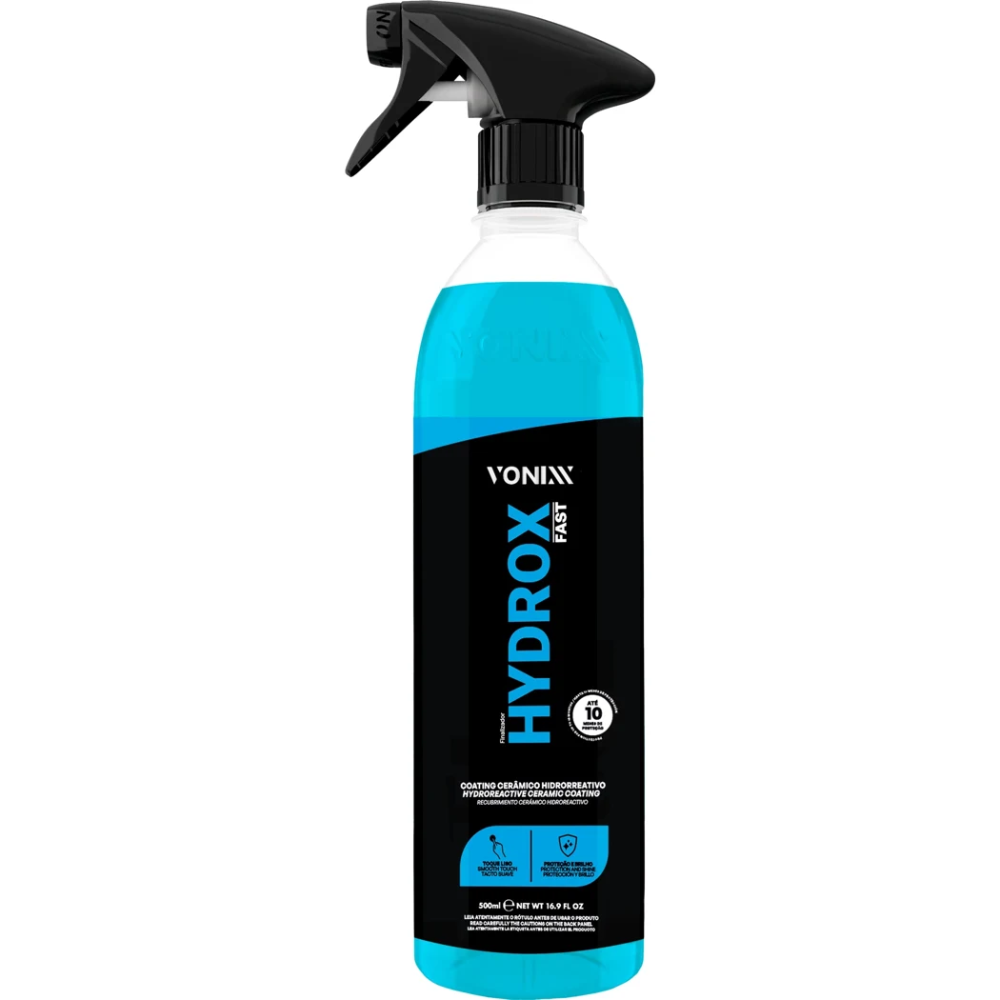

Paint & protection
Vonixx Blend Spray Wax
Refresh the gloss between full detailing sessions.
Explore product
Reference product shown. Final model, sizes and included items will be confirmed before launch.
Paint & protection / VONIXX
Add water-repellent protection during the final rinse.
A ready-to-use, water-activated ceramic spray sealant. Apply it to a clean, wet vehicle and rinse as directed to add a protective finishing step to your wash.
Not available to order yet. We will share availability, pricing and delivery details when this product launches.
Explore the collectionAsk us about this productONE JOB. MADE EASIER.
A ready-to-use, water-activated ceramic spray sealant. Apply it to a clean, wet vehicle and rinse as directed to add a protective finishing step to your wash.
Car care. Less effort. Use the right product at the right stage of your routine.
YOUR ROUTINE
Clean and rinse the exterior thoroughly, leaving the surface wet.
Work as directed by the bottle on cool surfaces out of the sun.
Rinse thoroughly without letting the product dry, then dry the vehicle.
GET TO KNOW IT
| Product type | Hydroreactive ceramic spray sealant |
|---|---|
| Reference size | 500 mL |
| Stage | After washing, before drying |
| Application | Wet surface; follow the label |
Specifications describe the reference product shown. Follow the supplied label and equipment instructions.
BEFORE YOU START
No. Clean the surface before applying this finishing product.
Durability depends on preparation, use and conditions. Refer to the label; no fixed protection period is promised here.
This product is being prepared for our new collection. Ordering will open once the final product, availability and price are confirmed.
BUILD YOUR ROUTINE
Paint & protection
Refresh the gloss between full detailing sessions.
Explore product